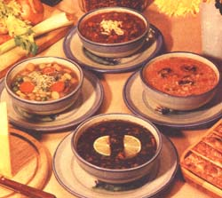

In Three Delicious, Nourishing, Meatless Sandwiches (July/August 1977), we introduced you to Leona Farquhar, proprietress of The Merry Miller - a vegetarian restaurant and health food store here in Hendersonville - and natural foods chef extraordinaire.
Well, after the initial arm-twisting that went on before we were allowed to feature some of Leona's sandwiches - and once Ms. Farquhar found she wouldn't be besieged by so many new customers (as a result of the publicity) that she'd have to close up shop (after all, summer tourists may double Hendersonville's population, but this is still a small town) - we had an easier time of it when we set out to persuade Leona to share some of her soup recipes.
Leona Farquhar makes one soup per day, from scratch and, while she varies her ingredients so that a given pottage is never quite the same from one making to the next, the results are always predictably delicious.
Without further ado, then, here are the recipes for four of The Merry Miller's good soups.
Pick over and wash 1 pound of black (or turtle) beans, soak them overnight, and then cook the legumes about 1 1/2 hours (until they're soft but not mushy). Add 1 medium-sized carrot, cut into thin strips 1 inch long; 2 finely chopped medium-sized onions; 2 well-chopped stalks of celery; 2 minced cloves of garlic; about 1 1/2 cups of tomato puree; 1 teaspoon of sweet basil and about 1 tablespoon of vegetable salt (Vegesal is one available brand). Allow the soup to simmer until the vegetables lose most of their crunch. If the beans haven't broken up and the soup seems thin, add 1 tablespoon of arrowroot starch - stirred into a little water - to thicken it. Serve with a slice or two of fresh lime (lemon will do in a pinch).
Pour 1 cup of hulled millet into 2 quarts of boiling water and let simmer about 20 minutes. Then chop and add 1 green pepper, 1 medium-sized onion and 1 stalk of celery, plus a couple of minced garlic cloves, 1 teaspoon of sweet basil, 1 tablespoon of vegetable salt, 6 fresh tomatoes (peeled and cut up), and about 1 1/2 cups of tomato puree.
Let the soup keep simmering until the vegetables are somewhat softened, and then add 1/2 cup or more of sliced fresh mushrooms and serve.
Pick over and wash 1 pound of red beans or kidney beans, and soak them overnight. Then cook 'em for about 1 hour, or until they're soft, in just enough water to cover the beans. Add 1 green pepper, 2 medium-sized onions, 2 stalks of celery and 6 peeled tomatoes (all chopped), then 1 1/2 cups of tomato puree, 2 minced garlic cloves, 1 tablespoon of vegetable salt, 1 teaspoon of chili powder (or more if you like it hot) and 1 teaspoon of oregano.
Let the vegetables cook just long enough to be slightly softened, while remaining crisp, then dish out your chili! Garnish it with a little grated cheese, and we guarantee you that you won't miss the "carne" at all!
Start with 2 quarts of water, to which you may add any fresh vegetables you like: turnips, rutabagas, carrots, onions, potatoes (with the skins left on and scrubbed well), celery, lima beans, yellow squash, peas, corn, green beans, tomatoes, etc. Start the root vegetables first, then add the quicker-cooking ones. The idea is to make this soup as colorful as possible, so dice the vegetables into bite-sized pieces that look like confetti.
Season the broth with minced garlic, 1 teaspoon of sage or thyme and 1 tablespoon of vegetable salt. If the soup seems watery, pour a little of the hot liquid into 1/4 cup of plain yogurt and blend the mixture well so that it has no lumps. Then stir the thickener into the main pot and dish up!
Simple enough? And you'll find these soups substantial enough to satisfy the most robust appetites, at costs that won't deplete even the puniest financial resources!
|
MARTIN FOX Leona Farquhar, proprietress of vegetarian restaurant and health food store The Merry Miller. |
 MARTIN FOX These four soups make a hearty meal with big flavor and low cost. |
|